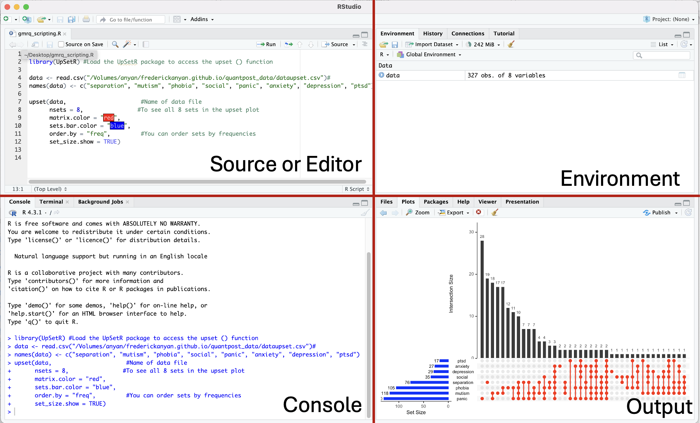
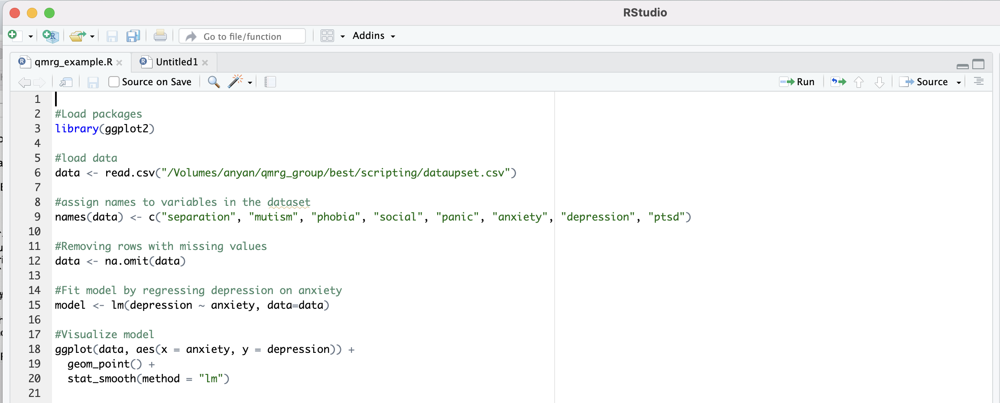
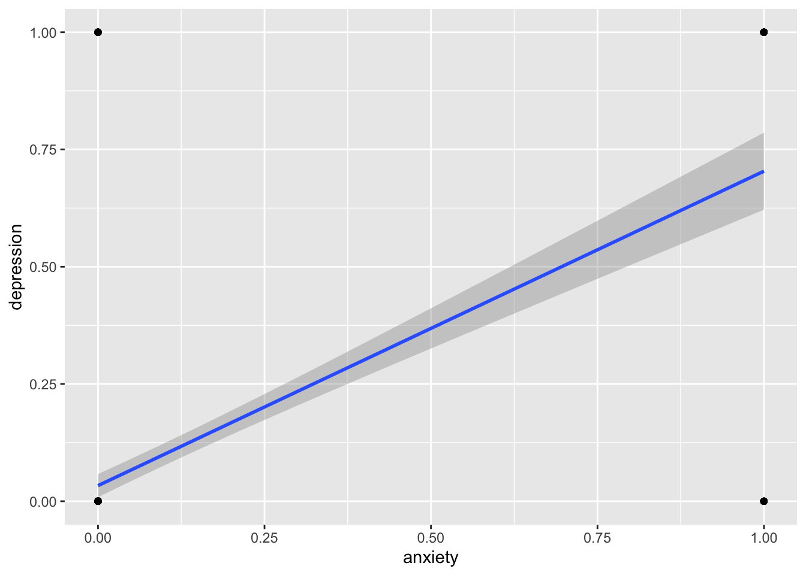
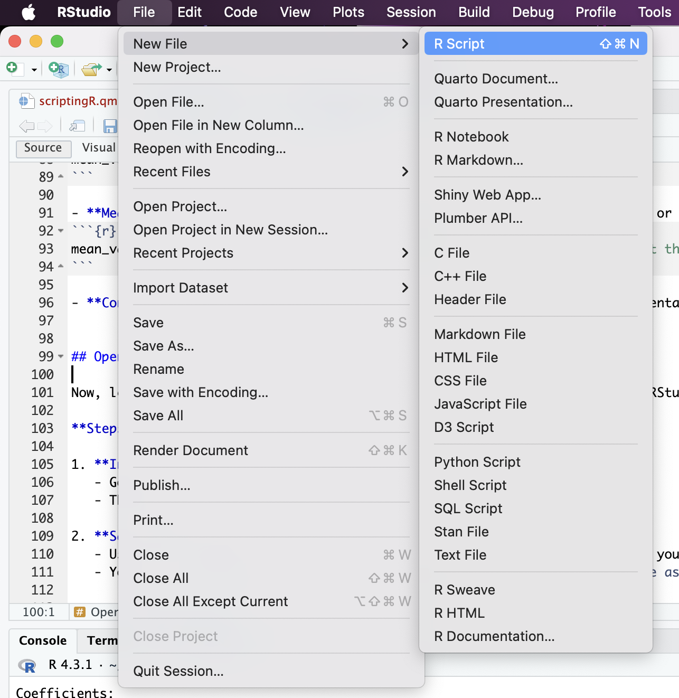
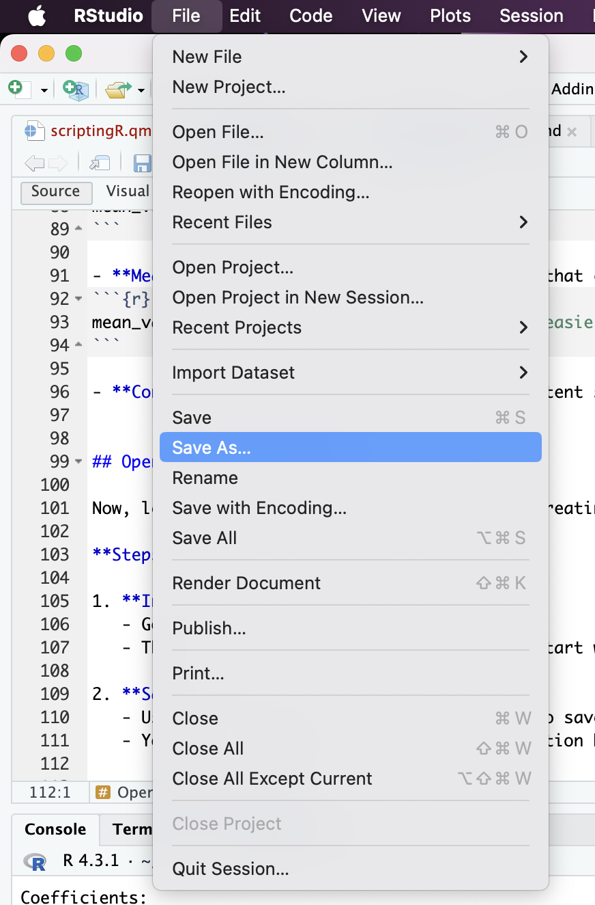
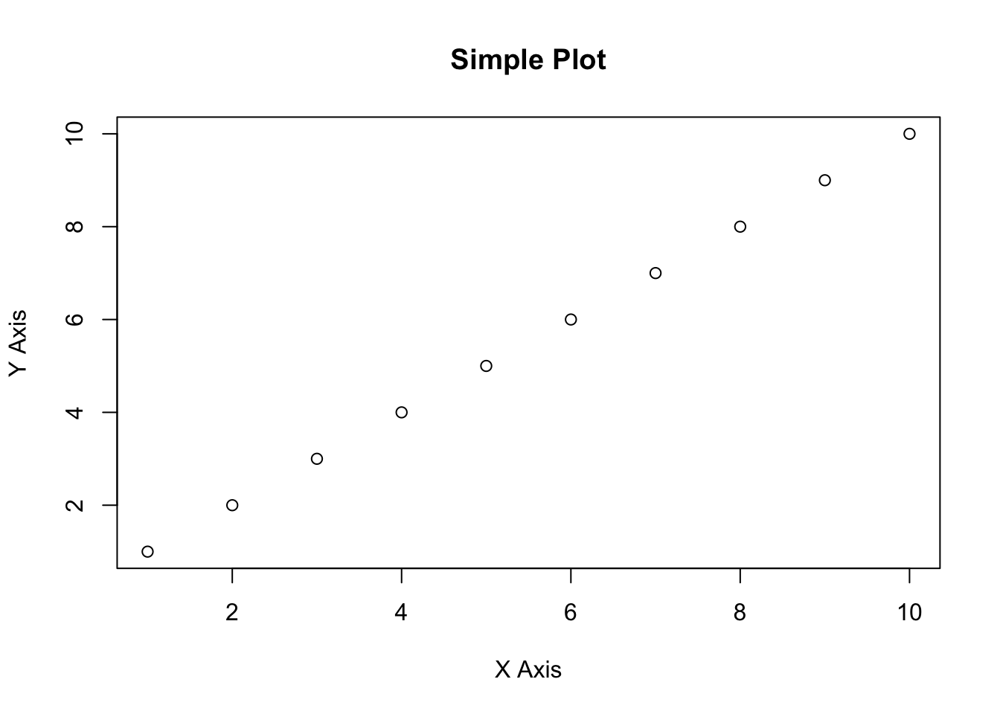

Scripting in R
RStudio combines an editor (sometimes called source), console, file manager, and visualization tools in one place, making it easier to manage your workflow. This is a short walk-through of how to use R scripts to organize your workflow. Let’s start with the primary pane layouts in RStudio.
Pane layout in RStudio
There are four primary panes in the RStudio IDE (Integrated Development Environment) user interface. These are
- Source or editor pane: This is where you write your code. The code will run when you send to the console.
- Console pane: This is where your code executes when you send from the editor pane. You can also execute quick codes that you do not want to save here.
- Environment pane: This is where objects in your working space are displayed. This pane also contains History, Connections, Build, and Tutorial tabs.
- Output pane: This is where you can see your files directory, view plots, packages, access R help, and other tabs

You can minimize or maximize each pane within each quadrant by clicking the minimize/maximize buttons on the top right of each pane.
Using R scripts
In R, a script is a file that contains a series of R commands written in the R language that can be executed in sequence. When you work interactively with R, you often enter commands directly into the console. While this is useful for quick tasks, it is not practical for more complex tasks or when you want to keep a record of your workflow. Scripting to the rescue! An image of an R script is shown below.

Scripts are essential for reproducibility, as they allow you to document and track the entire workflow (e.g., data analysis process from start to finish). We will look more into the concept of scripting in R, explaining their importance in your workflow management. But first, it is important that you have familiarized yourself with managing projects in R, if you already do not know how to manage projects in R. You can also benefit from some guidelines and convention when working in R
Components of a typical script
Comments in R are written with a #. For example, #Load the UpSetR package to access the upset() function. While you can keep all your codes in a single script, you may also want to have several scripts for different levels or stages of your workflow. See Importing and analyzing data subsection in managing projects in R
-
Loading Libraries: Most scripts begin by loading the necessary R packages using the
library()function. Let’s load these two packages.
- Data Loading: Next, we will load our data, often from a file like a CSV.
- Data Cleaning and Manipulation: This section of the script would include all the steps we take to clean and prepare our data for analysis.
Code
#Removing rows with missing values
data <- na.omit(data) - Analysis: Here, we perform the actual analysis. So, let’s regress depression on anxiety.
Code
#Regress depression on anxiety
model <- lm(depression ~ anxiety, data=data) - Visualization: Finally, scripts often include code to visualize the results.
Code
ggplot(data, aes(x = anxiety, y = depression)) +
geom_point() +
geom_smooth(formula = y ~ x, method = "lm")
The blue line represents the fitted regression line and the grey bands represent the 95% confidence interval limits.
R has enormous capabilities for visualizations! For example, we can produce an upset plot to visualize the size and the pairwise combinations or intersections of sets and their aggregates. This facilitates easy-to-understand communication of the size or proportion of set memberships.
Code
upset(data,
nsets = 8,
matrix.color = "red",
sets.bar.color = "blue",
order.by = "freq",
set_size.show = TRUE) 
The blue bar chart shows the total size of the sets (i.e., set size). The red filled-in circles corresponds to intersections or overlaps showing which set is part of an intersection or which symptoms overlaps with which other symptoms(s). For example, panic and mutism form an intersection or overlap, and so does panic and phobia. Additionally, panic, mutism, phobia and separation also form an intersection. And so on…The black bar chart shows the frequencies for each intersection (or intersection size).
Why scripts are so important
Reproducibility: Scripts ensure that your workflow is organized in a manner that can be reproduced by others or by you at a later time. Everything from loading packages through loading data to final analysis and visualizations is documented in one place. In an R script.
Automation: I believe in the ‚Äúeasier-is-better‚Äù heuristic approach to learning. Well, not always, but don‚Äôt worry yet. If you, like myself find yourself repeating the same steps often (like data cleaning or generating specific plots), and also believe, even if only a little that ‚Äúeasier-is-better‚Äù, then follow me - haha!üòÑ. A script allows you to automate these tasks and saves you a lot of time. Makes things easier!
Collaboration: Some things cannot be shared, and I won’t share my caramel candies. Never! But my R scripts can definitely be shared. This makes it easier to collaborate on projects with colleagues. So that my colleagues can see exactly what steps I took and suggest improvements or changes. Well, not all of your suggestions or changes will be accepted by colleagues. Still, don’t worry. Move on!
Writing R scripts in the Editor
The primary tool for writing scripts is the R editor, but we can also use other text editors. R script is the most commonly used for scripting, offering features like syntax highlighting, code completion, and direct execution of code. Some of these features are very helpful. For example, syntax highlighting helps differentiate between functions, variables, and comments, making code easier to read and debug. R script can also organize code with comments, meaningful variable names, and consistent formatting. As you have probably already seen, my codes have been annotated with comments that is very useful for handling complex tasks in R. While writing scripts, RStudio will suggests codes as you type, reducing the chances of errors and speeding up coding.
Sublime Text, Visual Studio Code, or even a basic text editors (e.g., Notepad++, TextEdit) can be used, though they might lack some R-specific features. The editor is where we compose and edit R scripts as such using a good editor can significantly enhance productivity.
Best practices when scripting
-
Use Comments: Comments start with
#and are ignored by R when the script runs. Use them to explain your code. Have a look over my codes again and also see the example below
- Meaningful Variable Names: Choose names that clearly describe the data or function of the variable.
- Consistent Formatting: Stick to a consistent style (e.g., spacing, indentation) to make your code readable. You can read more about the tidyverse style guide.
Opening a new R script
Now, let me guide you through the process of creating a new R script within RStudio. Opening a new script is the first step in starting your R programming tasks. This is a very basic, yet crucial, task.
Steps:
-
In RStudio:
- Go to
File>New File>R Script. - This opens a blank script where you can start writing your R code.
- You can immediately start writing R code in the newly opened script.
- Go to

-
Saving the Script:
- It is good practice to save your script right away.
- Use
Ctrl+S(Windows) orCmd+S(Mac) to save the script regularly as you write it. Always choose a descriptive file name. - You can also use the point-and-click function by going to
File>Save. - It is also good practice to save your script in a directory related to your project. RStudio projects are helpful for keeping everything organized. Look here for managing R projects

Up to this point, you are on your way to writing your first R script! But first, let’s look at how to send the code in the script from the editor to the console.
Sending code from editor to the Console
This section will show how to send R script code from the editor pane to the R console pane for execution. This is essential for testing and running your code incrementally.
Steps:
-
Highlight Code:
- Highlight a section of code in your script.
- You can also move your cursor to the code you want to run
-
Send to Console:
- Use
Ctrl+Enter(Windows) orCmd+Enter(Mac) to send the selected code to the console.
- Use
-
Run Entire Script:
- Use
Ctrl+Shift+S(Windows) orCmd+Shift+S(Mac) to run the entire script. - You can also use the point-and-click by going to the top-right corner of the source pane and clicking on
Run
- Use
Your first R script
Now is the time for you to go through writing your first simple R script. The focus here is on basic operations that demonstrate the functionality of R. Writing your first script is an exciting step so we will try to perform some basic calculations and generate a plot.
Steps:
-
Start with a Comment:
- Always begin with a comment to describe what the script does. Comments are written with a
#.
- Always begin with a comment to describe what the script does. Comments are written with a
# This is my first R script. I am going to do some basic calculations and plotting.-
Basic Calculation:
- Let’s perform a simple calculation.
Code
# Calculate 2 plus 2
result <- 2 + 2
#Show results
print(result) [1] 4-
Assign Values to Variables:
- You can assign the result of any operation to a variable.
Code
#Assign 5 to x, and 3 to y
x <- 5
y <- 3
#Find the sum of x + y and show the results
sum_xy <- x + y
print(sum_xy) [1] 8-
Simple Plotting:
- R has powerful plotting capabilities built-in. Here’s a basic example:
Code
#This code plots the numbers 1 through 10 on a simple scatter plot, labeling the axes.
plot(1:10, main="Simple Plot",
xlab="X Axis",
ylab="Y Axis") 
-
Save and Run the Script:
- Save your script and run it to see the results. In RStudio, you can select the code and press
Ctrl+Enterto send it to the console.
- Save your script and run it to see the results. In RStudio, you can select the code and press
Function, Argument, and Parameters
This section introduces the fundamental concept of functions in R, which are predefined reusable blocks of code that perform specific tasks. Any proficient R user can write their own functions. Functions take inputs called arguments or parameters. Understanding how functions, arguments, and parameters work together is crucial for efficient coding and advancing your scripting. Functions are at the heart of R programming. Functions are organized in blocks, are reusable and so they make your code modular and easier to manage. They allow us to perform specific tasks repeatedly without rewriting code. For example, print() displays output, and plot() creates graphs.
- Example:
Code
[1] 9- Here,
square_thistakes an inputx, squares it, and returns the result.
Arguments and Parameters:
-
Arguments: These are the actual values you pass to a function to modify its behavior. In the example above,
3is the argument. -
Parameters: These are the variables defined in the function’s signature that receive the argument values, and used to describe the inputs in function definitions. In
square_this,xis a parameter.
Built-in RStudio functions:
Getting help
This section provides guidance on where you can find more help if you encounter issues or want to learn more.
Resources:
- IPS resources: Here in IPS we have the R Club and the R Workshop seminar series. Join on Teams for more information. The Quantitative Seminar Series in Psychology delivers a broad range of in-person and online quantitative methods and statistical modelling workshops. The last session is available here.
-
R Help Files: Use
?function_nameorhelp(function_name)to access built-in help for any function. - Online Communities: Stack Overflow, RStudio Community, and R-help mailing lists are great places to ask questions.
- R Documentation: Comprehensive manuals are available at the R project website.
- Tutorials and Books: This is a great book for most of the things you will need to do in R.